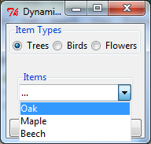

Tkintertoy 1.5 Tutorial
- Date:
Jun 07, 2023
- Author:
Mike Callahan
Introduction
Tkintertoy grew out of a GIS Python (mapping) class I taught at a local college. My students knew GIS but when it came time to put the workflows into a standalone application, they were stumped with the complexity of programming a GUI, even with Tkinter. So I developed an easy to use GUI library based on Tkinter that made it much simpler to code applications. After several trials the result was Tkintertoy which is easy to use, but also can be create more complex GUIs. I have been teaching using it locally and created a series of narrated Powerpoint slides using Tkintertoy in the development of easy applications on YouTube. With this version, I have fixed a few minor bugs, improved the documentation, improved the operation of the library, and cleaned up the code for version 1.4. Support for Python 2 was removed since the library is no longer tested using Python 2.
Tkintertoy creates Windows which contain widgets. Almost every tk or ttk
widget is supported and a few combined widgets are included. Most widgets
are contained in a Frame which can act as a prompt to the user. The widgets
are referenced by string tags which are used to access the widget, its
contents, and its containing Frame. All this information is in the content
dictionary of the Window. The fact that the programmer does not need to keep
track of every widget makes interfaces much simpler to write, one only needs
to pass the window. Since the widgets are multipart, I call them ttWidgets.
Tkintertoy make it easy to create groups of widgets like radio buttons, check boxes, and control buttons. These groups are referenced by a single tag but individual widgets can be accessed through an index number. While the novice programmer does not need to be concerned with details of creating and assigning a tk/ttk widget, the more advanced programmer can access all the tk/ttk options and methods of the widgets. Tkintertoy makes sure that all aspects of tk/ttk are exposed when the programmer needs them.
In the following example below, one can see how the ideas in Tkintertoy can be used to create simple but useful GUIs. GUI programming can be fun, which puts the “toy” in Tkintertoy.
A “Hello World” Example
Let’s look at a bare bones example of a complete GUI using imparative style. Imparative code are sometimes called scripts since their structure is simple. More complex code are ususally called applications.
This GUI will ask for the user’s name and use it in a welcome message. This example uses these widgets: ttEntry, ttLabel, and ttButtonbox.
In relating this application to a command-line application, the entry replaces the input()
function, the label replaces the print() function, and the buttonbox replaces the Enter
key. Below is the code followed by an explanation of every line:
1from tkintertoy import Window 2gui = Window() 3gui.setTitle('My First Tkintertoy GUI!') 4gui.addEntry('name', 'Type in your name') 5gui.addLabel('welcome', 'Welcome message') 6gui.addButton('commands') 7gui.plot('name', row=0) 8gui.plot('welcome', row=1) 9gui.plot('commands', row=2, pady=10) 10while True: 11 gui.waitforUser() 12 if gui.content: 13 gui.set('welcome', 'Welcome ' + gui.get('name')) 14 else: 15 break
Here is a screen shot of the resulting GUI:
Here is an explanation of what each line does:
Import the
Windowcode which is the foundation of Tkintertoy.Create an instance of a
Windowobject assigned togui. This will initialize Tk, create a Toplevel window, create an application Frame, and create acontentdictionary which will hold all the widgets.Change the title of
Windowto “My First Tkintertoy GUI!”. If you don’t do this, the title of theWindowwill default to “Tk”. If you want no title, make the argument ‘’ or None.Add an ttEntry widget to
gui. This will be the combination of a ttk Entry in a ttk LabelFrame. We are going to tag it with ‘name’ since that is what we going to collect there. However, the tag can be any string. All Tkintertoy widgets must have a unique tag which acts as the key for the widget in thecontentdictionary. However, most of the time the programmer does not access thecontentdictionary directly. The title of the Frame surrounding the Entry widget will be ‘Type in your name’. Entry frame titles are a great place to put instructions to your user. If you don’t want a title, just leave off this argument. The default width of the Entry widget is 20 characters, but this, like many other options can be changed.Add a ttLabel widget to
gui. This will be the combination of a ttk Label in a ttk LabelFrame. This tag will be ‘welcome’ since this where the welcome message will appear. Labels are a good widget for one line information to appear that the user cannot edit. The explanation of the type of information displayed in the ttLabel is displayed in the LabelFrame, just like in the ttEntryAdd a ttButtonbox row with a tag of ‘commands’. It defaults to two ttk Buttons, labeled ‘Ok’ and ‘Cancel’ contained in a unlabeled ttk Frame. Each button is connected to a function or method, called a “callback” which will execute when the user clicks on that button. The callback for the ‘Ok’ button is the
breakout()method which exits the GUI processing loop but keeps displaying the window. This will be explained below. The ‘Cancel’ button callback is thecancel()method which exits the loop, removes the window, and empties thecontentdictionary. Of course, the button labels and these actions can be easily modified by the programmer, but by providing a default pair of buttons and callbacks, even a novice programmer can create a working GUI application. No callback programming is necessary.Place the ‘name’ ttwidget at row 0 (first row) of
guicentered. Therow=0parameter could have been left off since it is the default. Theplot()method is a synonym for the tkgrid()method. All arguments togrid()can be used inplot(). Plot was selected as a better word for a novice. However,grid()will also work. Until a widget is plotted, it will not appear. However, theguiwindow is automatically plotted. Actually, you are plotting the ttk LabelFrame, the ttk Entry widget is automatically plotting in the Frame filling up the entire frame.Place the ‘welcome’ widget at row 1 (second row) of
guicentered. There is a 3 pixel default vertical spacing between the Label widget and Entry widget.Place the ‘command’ widget at row 2 (third row) of
guicentered with a vertical spacing of 10 pixels.Begin an infinite loop.
Wait for the user to press click on a button. The
waitforUser()method is a synonym for the tkmainloop()method. Again, the name was changed to help a novice programmer. However,mainloopwill also work. This method starts the event processing loop and is the heart of all GUIs. It handles all key presses and mouse clicks. Nothing will happen until this method is running. This loop will continue until the user clicks on the either the ‘Ok’ or ‘Cancel’ button. Clicking on close window system widget will have the same action as clicking on the ‘Cancel’ button. This action is built-in to all Tkintertoy windows.To get to this line of code, the user clicked on a button. Test to see if the
contentdictionary contains anything. If it does, the user clicked on the ‘Ok’ button. Otherwise, the user clicked on the ‘Cancel’ button.To get to this line of code, the user clicked on the ‘Ok’ button. Collect the contents of the ‘name’ ttwidget and add it to the “Welcome” string in the ‘welcome’ ttwidget. This shows how easy it is to get and set the contents of a widget using the given methods. To get the value of a widget call the
get()method. To change the value of any widget call theset()method. The type of widget does not matter,get()andset()work for all widgets. Since all widgets are contained in thecontentdirectory ofgui, the programmer does not need to keep track of individual widgets, only their containing frames or windows. Again, the usually programmer does not accesscontentdirectly, they should usegetandsetmethods.This line of code is reached only if the user clicked on ‘Cancel’ which emptied the
contentdirectory. In this case, the user is finished with the application.Break the infinite loop and exit the program. Notice the difference between the infinite application loop set up by the
whilestatement and the event processing loop set up by thewaitforUser()method. Also note that when the user clicked on ‘Cancel’, the tkintertoy code exited, but the Python code that called tkintertoy was still running. This is why you must break out of infinite loop.
So you can see, with 15 lines of code, Tkintertoy gives you a complete GUI driven application, which will run on any platform Tkinter runs on with little concern of the particular host. Most Tkintertoy code is cross platform.
Simple Map Creation Dialog
Below is the code to create a simple dialog window which might be useful for a GIS tool which creates a map. This example was also written in imparative style in order to help the typical GIS or novice Python script writer. Procedure and object-oriented style coding will be demonstrated later.
We will need the filename of the input CSV file, the output PNG map image, and the title for the map. We will use the following widgets: ttOpen, ttSaveAs, ttEntry, and ttText as a status window.
We want the layout for the dialog to look like this:
Here is the code (we will not worry not the code that actually creates the map!):
1from tkintertoy import Window 2gui = Window() 3gui.setTitle('Create a Map') 4csv = [('CSV files', ('*.csv'))] 5gui.addOpen('input', 'Input CSV filename', width=40, filetypes=csv) 6png = [('PNG files', ('*.png'))] 7gui.addSaveAs('output', 'Output PNG filename', width=40, filetypes=png) 8gui.addEntry('title', 'Map Title', width=40) 9gui.addText('status', width=40, height=5, prompt='Status:') 10gui.addButton('commands') 11gui.plot('input', row=0, pady=10) 12gui.plot('output', row=1, pady=10) 13gui.plot('title', row=2, pady=10) 14gui.plot('status', row=3, pady=10) 15gui.plot('commands', row=4, pady=20) 16gui.waitforUser() 17if gui.content: 18 message = f"Converting {gui.get('input')} into {gui.get('output')}...\n" 19 gui.set('status', message) 20 gui.master.after(5000) # pause 5 seconds 21 # magic map making code goes here... 22 gui.cancel()
Each line of code is explained below:
Import the
Windowobject from tkintertoy.Create an instance of a
Windowand label itgui.Set the title
guito “Create a Map”.We want to limit the input files to .csv only. This list will be used in the method in the next line. Notice, you can filter multiple types.
Add an ttOpen dialog widget. This is a combination of a ttk Entry widget, a ‘Browse’ ttk Button, and a ttk LabelFrame. If the user clicks on the ‘Browse’ button, they will see a directory limited to CSV files. To allow the user to see the entire path, we change the width of the entry to 40 characters.
We want to limit our output to .png only.
Add a ttSaveAs dialog widget. This is a combination of a ttk Entry widget, a ‘Browse’ ttk Button, and a ttk LabelFrame. If the user clicks on the ‘Browse’ button, they will see a directory limited to PNG files. If the file already exists, an overwrite confirmation dialog will pop up.
Add an ttEntry widget that is 40 characters wide to collect the map title.
Add a ttText widget, which is a combination of a ttk Text widget, a ttk Scrollbar, and a ttk LabelFrame. It will have a width of 40 characters, a height of 5 lines, and will be used for all status messages. The ttText widget is extremelly useful for many different purposes.
Add a ttButtonbox with the default ‘Ok’ and ‘Cancel’ buttons.
Plot the ‘input’ widget in the first row (row 0), vertically separating widgets by 10 pixels.
Plot the ‘output’ widget in the second row, vertically separating widgets by 10 pixels. Notice this will cause a 20 pixel separation between the input and output widgets.
Plot the ‘title’ widget in the third row, vertically separating widgets by 10 pixels.
Plot the ‘status’ widget in the fourth row, vertically separating widgets by 10 pixels.
Plot the ‘commands’ widget in the fifth row, vertically separating widgets by 20 pixels. This will be 30 pixels from the status widget.
Enter the event processing loop and exit when the user clicks on a button.
If the user clicked on the OK button do the following:
Create the status message.
Display the status message.
Pretend we are making a map but in reality just pause for 5 seconds so the user can see the status message.
This is where the actual map making code would begin.
Exit the program.
Notice, if the user clicks on the Cancel button, the program exits at line 17.
Selection Widgets
Many times you want to limit the user to a fixed set of options. This next example demonstrates widgets that are useful for this task. We will create a hamburger ordering application which will use three type of selection widgets: ttRadiobox, ttCheckbox, and ttList. We will stay with imparative style programming.
Radiobox widgets are great for showing the user an list of dependent options. Only one option in the list can be selected at a time. The name radiobutton comes from old-fashioned car radio tuner buttons. Checkboxes allow the user to select many independent options at a time. Lists can be programmed to do both.
We will use a radiobox to select whether the user want a single, double, or a triple burger. We will user a list to indicate which toppings the user wants, and a checkbox to indicate the desired condiments.
Below is a screenshot of the application:
Here is the code:
1from tkintertoy import Window 2app = Window() 3app.setTitle('Order a Hamburger') 4burgerType = ['Single', 'Double', 'Triple'] 5app.addRadio('type', 'Type of Hamburger', burgerType) 6toppings = ['Cheese', 'Lettuce', 'Onions', 'Pickles', 'Tomato', 'Relish'] 7app.addList('toppings', 'Select Toppings', toppings, selectmode='multiple') 8condiments = ['Ketchup', 'Mayonaise', 'Mustard', 'BBQ'] 9app.addCheck('condiments', 'Condiments', condiments, orient='vertical') 10app.addText('order', 'Order Up', height=5) 11app.addButton('commands') 12app.plot('type', row=0, column=0) 13app.plot('toppings', row=0, column=1) 14app.plot('condiments', row=0, column=2) 15app.plot('order', row=1, column=0, columnspan=3) 16app.plot('commands', row=2, column=0, columnspan=3, pady=10) 17 18while True: 19 app.waitforUser() 20 if app.content: 21 btype = app.get('type') 22 toppings = app.get('toppings') 23 condiments = app.get('condiments') 24 app.set('order', f'A {btype} hamburger', allValues=True) 25 if toppings: 26 app.set('order', ' - with: ') 27 tops = ', '.join(toppings) 28 app.set('order', f' {tops}\n') 29 else: 30 app.set('order', ' - plain\n') 31 if condiments: 32 app.set('order', ' - add: ') 33 conds = ', '.join(condiments) 34 app.set('order', f' {conds}\n') 35 app.reset('type') 36 app.reset('toppings') 37 app.reset('condiments') 38 else: 39 break 40
Import the
Windowobject from tkintertoy.Create an instance of a
Windowand label itapp.Set the title
appto “Order a Hamburger”.Create a list of burger types.
Add a ttRadiobox which is a list of three ttk Radiobuttons labeled with the type of burgers. These will be referenced with a single tag, ‘type’. If we want to reference a single Radiobutton, we will use an index; [0], [1], or [2].
Create a list of burger toppings.
Add a ttListbox which is a tk Listbox with a tk scrollbar. The elements are the items in the list of toppings. Notice that selectmode is ‘multiple’ so the will be able to topping multiple toppings without pressing the control key. This is a good example of when a listbox is useful. While it does take up screen space, it makes it easy to select many multiple options and restricts the user to a fixed set of options.
Create a list of condiments.
Create a ttCheckbox which is a list of three ttk Checkbuttons labeled with the condiments. The orientation will be vertical. This is another widget where the user can select multiple options. It is best used with a small number of options.
Add a ttText with a height of 5. This is where the order will appear.
Add a ttButtonbox with the default ‘Ok’ and ‘Cancel’ buttons.
Plot the ‘type’ widget in the first row, first column.
Plot the ‘toppings’ widget in the first row, second column.
Plot the ‘condiments’ widget in the first row, third column.
Plot the ‘order’ widget in the second row, strectched across three columns.
16. Plot the ‘commands’ widget in the third row, also stretched across three columns. 18. Begin a infinite loop. 19. Enter the event processing loop and exit when the user clicks on a button. 20. If the user clicked on the OK button do the following: 21. Get the burger type. 22. Get the toppings list. 23. Get the condiments list. 24. Start the order message. The allValue=True clears the text widget of any previous orders. 25. If the user selected any toppings… 26. Add the toppings phrase in the ‘orders’ widget. 27. Create a string containing the selected toppings separated by a comma. 28. Add it to the ‘orders’ widget. 29. If the user selected no toppings… 30. Mark the burger as plain. 31. If the user selected any condiments… 32. Add the condiments phrase. 33. Create a string containing the selected condiments separated by a comma. 34. Add it to the order. 35. Reset the ‘type’ widget. 36. Reset the ‘toppings’ widget. 37. Reset the ‘condiments’ widget. 38. If the user clicked on the ‘Cancel’ button… 39. Break the infinate loop. The Tkintertoy application was automatically canceled.
This is a example showed some of the selection widgets that are available in Tkintertoy. The best one to use is up to the programmer’s discretion. As you can see, this code is getting too long for imparative style. We will use procedure style in the next example.
Dynamic Widgets
A very useful technique is to create a widget which is dependent on the contents of another widget. The code below shows a ttCombobox which is dependent on a ttRadiobox row.
The trick to have the contents of a combobox be dependent on a radiobox, is to create a combo widget and then create a callback function which looks at the contents of the radiobox and then sets the item list attribute of the combo widget. This time we will use procedure style code which is a more advanced style but still accessable to the novice programmer. We will also do a better job in adding comments to the code.
Here is the screenshot:

The callback function will have to know the widget that called it which is included when the Window is passes as an argument, which will lead to some strange looking code. This complexity can be eliminated by writing in an object-oriented fashion, which will be covered in the next example.
Below is the code:
1from tkintertoy import Window 2 3def update(gui): # callback function 4 """ set the alist attribute by what is in the radio button box """ 5 lookup = {'Trees':['Oak','Maple','Beech'], 6 'Birds':['Cardinal','Robin','Sparrow'], 7 'Flowers':['Rose','Petunia','Daylily']} 8 select = gui.get('category') 9 gui.set('items', lookup[select], allValues=True) 10 gui.set('items', '...') 11 12def main(): 13 """ main driving function """ 14 categories = ['Trees','Birds','Flowers'] 15 gui = Window() 16 gui.setTitle('Dynamic Widget Demo') 17 gui.addRadio('category', 'Item Types', categories) 18 gui.addCombo('items', 'Items', None, postcommand=(lambda : update(gui))) 19 gui.addButton('command') 20 gui.set('items', '...') 21 gui.plot('category', row=0) 22 gui.plot('items', row=1, pady=20) 23 gui.plot('command', row=2) 24 gui.waitforUser() 25 if gui.content: 26 selected = gui.get('category') 27 item = gui.get('items') 28 # more code would go here... 29 gui.cancel() 30 31main()
Below explains every line:
1. Import Window from tkintertoy.
3. Define the callback function, update. It will have a single parameter, the calling Window.
4. This is the function documentation string. It is a great idea to have a documentation string for every
function and method. Since we are using the triple quote our comment can exceed a single line.
5. These next three lines define the lookup dictionary. 8. Get the category the user clicked on. This shows an advantage of Tkintertoy’s content directory. All
widgets are included in the window. The programmer does not have to pass individual widgets.
Using this category as a key, set all the values in the ttCombobox widget list to the list returned. by the lookup dictionary, rather than the entry widget. This is why the allValues is True.
Change the entry value of ‘items’ to ‘…’ which is why allValues is False. This will overwrite any selection the user had made.
Create the main function,
main. It will have no parameters. Most Python applications have a main driving function.The documentation line for
mainCreate the three categories.
Create an instance of
Windowassigned togui.Set the title for
gui.Add a ttRadiobox box using the categories.
Add a ttCombobox widget. This is a combination of a ttk Combobox contained in a ttk LabelFrame. This widget will update its items list whenever the user clicks on a radiobox button. This is an example of using the
postcommandoption for the combo widget. Normally,postcommandwould be assigned to a single method or function name. However, we need to includeguias an parameter. This is whylambdais there. Do not fearlambda. Just think of it as a specialdefcommand that defines a function in place.Add a ttButtonbox with the default ‘Ok’ and ‘Cancel’ buttons.
Initialize the items widget entry widget to just three dots. This lets the user know there are selections available in the pulldown.
Plot the category widget in the first row.
Plot the items widget in the second row.
Plot the command buttons in the third row.
Start the event processing loop and wait for the user to click on a button. Notice that as the user clicks on a category button, the list in the items combobox changes and the event loop keeps running. We do not need an infinite loop.
If the user clicked on Ok by seeing if content is not empty.
Retrieve the value of the category widget using the get method.
Retrieve the value of the items widget that was selected or typed in.
This where the actual processing code would start.
29. Exit the program. Calling cancel is the same as clicking on the Cancel button.
31. Call main. Even though we defined main above, Python will not execute the function until we call it.
Object-Oriented Dynamic Widgets
While I told you to not fear lambda, if you write code in an object-oriented mode, you don’t have to be concerned about lambda. One can write complex guis in tkintertoy without object-oriented style, which might be better for novice programmers, but most guis should be oject-oriented once the programmer is ready. While, the details of writing object-oriented code is far beyond the scope of this tutorial, we will look at the previous example in an object-oriented mode using composition. You will see, it is not really complicated at all, just a little different. The GUI design did not change.
Below is the new code:
1from tkintertoy import Window 2 3def update(gui): # callback function 4 """ set the alist attribute by what is in the radio button box """ 5 lookup = {'Trees':['Oak','Maple','Beech'], 6 'Birds':['Cardinal','Robin','Sparrow'], 7 'Flowers':['Rose','Petunia','Daylily']} 8 select = gui.get('category') 9 gui.set('items', lookup[select], allValues=True) 10 gui.set('items', '...') 11 12def main(): 13 """ main driving function """ 14 categories = ['Trees','Birds','Flowers'] 15 gui = Window() 16 gui.setTitle('Dynamic Widget Demo') 17 gui.addRadio('category', 'Item Types', categories) 18 gui.addCombo('items', 'Items', None, postcommand=(lambda : update(gui))) 19 gui.addButton('command') 20 gui.set('items', '...') 21 gui.plot('category', row=0) 22 gui.plot('items', row=1, pady=20) 23 gui.plot('command', row=2) 24 gui.waitforUser() 25 if gui.content: 26 selected = gui.get('category') 27 item = gui.get('items') 28 # more code would go here... 29 gui.cancel() 30 31main()
And the line explanations:
1. Import Window from tkintertoy.
3. Create a class called Gui. This will contain all the code dealing with the interface. We are not
inheriting from a parent class in this example. We will see how to do this in another example below.
4. This is a class documentation string. It is a great idea to document all classes, too.
6. Create an initialize method that will create the interface, called __init__. This strange name
is required. Methods names that begin and end with double underscore are special in Python.
This is the method documentation string.
Create the three categories.
Create an instance of
Windowassigned toself.gui. This means that all methods in the class will be able to access theWindowthroughself.gui.Set the title for
self.gui.Add a ttRadiobox using the categories.
Add a ttCombobox widget which will update its items list whenever the user clicks on a radiobox button. Notice that the
postcommandoption now simply points to the callback method withoutlambdasince ALL methods can accessself.gui. This is the major advantage to object-oriented code. It reduces argument passing.Add a ttButtonbox with the default ‘Ok’ and ‘Cancel’ buttons.
Initialize the items widget.
Plot the category widget in the first row.
Plot the items widget in the second row.
17. Plot the command buttons in the third row.
19. Create the callback method using the self parameter.
20. This is the method documentation string.
21. These next three lines define the lookup dictionary.
24. Get the category the user clicked on.
25. Using this category as a key, set all the items in the combobox widget list to the list returned
by the lookup dictionary, rather than the entry widget, which is why allValues is True.
26. Clear the items widget.
28. Create the main driving function.
29. Main documentation string.
30. Create an instance of the Gui class labeled app. Notice that app.gui will refer to the
Windowcreated in the__init__method andapp.gui.contentwill have the contents of the window.
Start the event processing loop and wait for the user to click on a button.
If the user clicked on Ok…
Retrieve the value of the category.
Retrieve the value of the entry part of the combobox.
35. This where the actual processing code would start. 37. Call main.
Notice if the user clicks on ‘Cancel’ there is no more code to execute.
There are very good reasons for learning this style of programming. It should be used for all except the simplest guis code. You will quickly get use to typing “self.” All future examples in this tutorial will use this style of coding.
Using the Collector Widget
This next example is the interface to a tornado path generator. Assume that we have a database that has tornado paths stored by date, counties that the tornado moved through, and the maximum damaged caused by the tornado (called the Enhanced Fajita or EF scale).
This will demonstrate the use of the ttCollector widget, which is a combination of a ttk Treeview, and two ttk Buttons. It acts as a dialog inside a dialog. Below is the screenshot:
You can see for the date we will use a ttSpinbox. A spinbox is a group of tk/ttk spinboxes that are
limited to integers, separated by a string, and contained in a tk/ttk frame. This is a excellent widget for
dates, times, social security numbers, etc. The get method will number the values of each box, with the
separtor in between as a string. The set method also requires the separtor in the string.
The county will be a ttCombo widget, the damage will use ttCheckbox and all choices will be shown in the ttCollector widget. Here is the code:
1from tkintertoy import Window 2 3class Gui(object): 4 """ The Tornado Path Plotting GUI """ 5 6 def __init__(self): 7 """ create the GUI """ 8 counties = ['Clark','Crawford','Dubois','Floyd','Harrison','Jefferson', 9 'Orange','Perry','Scott','Washigton'] 10 damage = ['EF0','EF1','EF2','EF3','EF4','EF5'] 11 dateParms = [[2,1,12],[2,1,12],[5,1900,2100]] 12 initDate = '1/1/1980' 13 cols = [['Date', 100],['County', 100],['Damage', 100]] 14 self.gui = Window() 15 self.gui.setTitle('Tornado Path Generator') 16 self.gui.addSpin('tdate', dateParms, '/', 'Date of Tornado') 17 self.gui.set('tdate', initDate) 18 self.gui.addCombo('county', 'Affected County', counties) 19 self.gui.addRadio('level', 'Maximum EF Damage', damage) 20 self.gui.addCollector('paths', cols, ['tdate','county','level'], 'Included Tornadoes', 21 height=10) 22 self.gui.addButton('command') 23 self.gui.plot('tdate', row=0, pady=5) 24 self.gui.plot('county', row=1, pady=5) 25 self.gui.plot('level', row=2, pady=5) 26 self.gui.plot('paths', row=3, pady=5) 27 self.gui.plot('command', row=4, pady=10) 28 29def main(): 30 """ the driving function """ 31 app = Gui() 32 app.gui.waitforUser() 33 if app.gui.content: 34 data = app.gui.get('paths', allValues=True) 35 print(data) 36 # magic tornado path generation code 37 app.gui.cancel() 38 39main()
Here are the line explanations, notice the first steps are very similar to the previous example:
1. Import Window from tkintertoy.
3. Create a class called Gui. This will contain all the code dealing with the interface.
4. This is a class documentation string.
6. Create an initialize method that will create the interface. All methods in the class will have
access to
self.
This is the method documentation string.
8. Create a list of county names. 10. Create a list of damage levels. 11. Create the parameter list for the date spinner. The first digit is the width, the second is the
lower limit, the third is the upper limit.
The initial date will be 1/1/1980.
Set up the column headers for the ttCollector widget. The first value is the the header string, the second is the width of the column in pixels.
Create an instance of
Windowlabeledself.gui. Again, theselfmeans that every method in the class will have access. Notice, there are no other methods in this class so making gui an attribute of self is unnecessary. However, it does no harm, other programmers expect it, and future methods can be added easily.Set the title of
self.guito “Tornado Path Generator”.Add a date ttSpinbox. This is a combination of 3 ttk Spinboxes seperated by a slash (/) contained in a ttk LabelFrame. It will be labeled tdate in order to not cause any confusion with a common date library.
Set the date to the default. Notice to set and value of a spinbox you use a list or tuple of integers.
Add a county ttCombo.
Add a damage level ttCheckbox.
Add a ttCollector. The collector has a tag, the column header list from line 13, a list of the widget tags it needs to collect, and the propmt. It also includes two buttons, ‘Add’ and ‘Delete’. Clicking on ‘Add’ will collect the values in the widgets and add them in a line in the treeview. Clicking on ‘Delete’ will delete the currently selected line in the treeview.
Add a ttButtonbox with the default ‘Ok’ and ‘Cancel’ buttons.
Plot the date widget in the first row, separating the widgets by 5 pixels.
Plot the county widget in the second row, separating the widgets by 5 pixels.
Plot the damage level widget in the third row, separating the widgets by 5 pixels.
Plot the path widget in the fourth row, separating the widgets by 5 pixels.
27. Plot the command widget in the fifth row, separating the widgets by 10 pixels.
29. Create a main function.
30. This is the function documentation.
31. Create an instance of the Gui class which will create the GUI.
32. Start the event processing loop
33. If the user clicked on ‘Ok’…
34. Get all the lines in the collector as a list of lists.
35. This is where the tornado path generation code would begin but we are just going to print the data.
The example gives [[‘4/3/2010’, ‘Clark’, ‘EF2’], [‘4/3/2010’, ‘Floyd’, ‘EF2’]].
Call the driving function.
When you click on ‘Add’, the current selections in tdate, counties, and level will be added into the collector widget in a row. If you select a row and click on ‘Delete’, it will be removed. Thus the collector acts as a GUI inside of a GUI, being fed by other widgets. If this was a real application, we would generate a tornado path map of the EF-2 tornadoes that moved through Clark and Floyd counties on April 4, 2010.
Using the Notebook Container
Tkintertoy includes containers which are Windows within Windows in order to organize widgets.
A very useful one is the ttNotebook which is a ttk Notebook. This example shows a notebook that
combines two different map making methods into a single GUI. This will use the following widgets:
ttEntry, ttCheckbox, ttText, ttSpinbox, and ttButtonbox. The style of code will
stay with composition.
Below is a screenshot:
Here is the code. We will also demonstrate to the set and get the contents of more widgets and introduce some simple error trapping:
1import datetime 2from tkintertoy import Window 3 4class Gui: 5 """ the GUI for the script """ 6 def __init__(self): 7 """ create the interface """ 8 self.dialog = Window() 9 self.dialog.setTitle('Mapper 1.0') 10 # notebook 11 tabs = ['Routine', 'Accumulate'] 12 pages = self.dialog.addNotebook('notebook', tabs) 13 # routine page 14 self.routine = pages[0] 15 today = datetime.date.today() 16 self.dt = today.strftime('%d,%m,%Y,%B').split(',') 17 self.routine.addEntry('title', 'Map Title', width=60) 18 self.routine.set('title', '24 Hour Precipitation Ending 7 AM {0[3]} {0[0]}, {0[2]}'.format( 19 self.dt)) 20 self.routine.plot('title', row=0) 21 self.routine.addEntry('outfile', 'Output Filename', width=40) 22 self.routine.set('outfile', 'pcpn{0[1]}{0[0]}{0[2]}.png'.format(self.dt)) 23 self.routine.plot('outfile', row=1) 24 jobs = ['Make KMLs', 'Make Maps'] 25 self.routine.addCheck('jobs', 'Jobs', jobs) 26 self.routine.set('jobs', jobs) 27 self.routine.plot('jobs', row=2) 28 # accum pcpn page 29 self.accum = pages[1] 30 parms = [[3, 1, 12], [3, 1, 31], [5, 2000, 2100]] 31 self.accum.addSpin('endDate', parms, '/', 'Ending Date', 32 command=self.updateAccum) 33 self.accum.set('endDate', f'{today.month}/{today.day}/{today.year}') 34 self.accum.plot('endDate', row=0) 35 self.accum.addSpin('daysBack', [[2, 1, 45]], '', 'Days back', 36 command=self.updateAccum) 37 self.accum.set('daysBack', '2') 38 self.accum.plot('daysBack', row=1) 39 self.accum.addEntry('title', 'Title', width=60) 40 self.accum.plot('title', row=2) 41 self.accum.addEntry('outfile', 'Output Filename', width=40) 42 self.accum.plot('outfile', row=3) 43 self.updateAccum() 44 # dialog 45 self.dialog.addText('messages', 'Messages', width=70, height=15) 46 self.dialog.plot('messages', row=1) 47 self.dialog.addButton('commands', space=20) 48 self.dialog.setWidget('commands', 0, command=self.go) 49 self.dialog.setWidget('commands', 1, text='Exit') 50 self.dialog.plot('commands', row=2) 51 self.dialog.plot('notebook', row=0) 52 self.dialog.set('notebook', 'Routine') 53 54 def updateAccum(self): 55 """ update widgets on accum page """ 56 end = [int(i) for i in self.accum.get('endDate').split('/')] 57 endDate = datetime.date(end[2], end[0], end[1]) 58 endDateFmt = endDate.strftime('%d,%m,%Y,%B').split(',') 59 daysBack = self.accum.get('daysBack')[0] 60 self.accum.set('title', '{0} Day Precipitation Total Ending {1[3]} {1[0]}, {1[2]}'.format( 61 int(daysBack), endDateFmt)) 62 begDate = endDate - datetime.timedelta(int(self.accum.get('daysBack')[0]) - 1) 63 begDateFmt = begDate.strftime('%d,%m').split(',') 64 self.accum.set('outfile', 'accum{0[1]}{0[0]}-{1[1]}{1[0]}{1[2]}.png'.format( 65 begDateFmt, endDateFmt)) 66 67 def go(self): 68 """ get current selected page and make map """ 69 run = self.dialog.get('notebook') # get selected tab number 70 mapper = Mapper(self) # create a Mapper instance using the Gui 71 # instance which is self 72 try: 73 if run == 'Routine': 74 mapper.runRoutine() 75 elif run == 'Accumulate': 76 mapper.runAccum() 77 except: 78 self.dialog.set('messages', self.dialog.catchExcept()) 79 80class Mapper: 81 """ contain all GIS methods """ 82 83 def __init__(self, gui): 84 """ create Mapper instance 85 gui: Gui object """ 86 self.gui = gui 87 88 def runRoutine(self): 89 """ make the routine precipitation maps """ 90 title = self.gui.routine.get('title') 91 filename = self.gui.routine.get('outfile') 92 self.gui.dialog.set('messages', f'Making {filename}.\n') 93 # magic map making code goes here 94 95 def runAccum(self): 96 """ make the accumulate precipitation map """ 97 title = self.gui.accum.get('title') 98 filename = self.gui.accum.get('outfile') 99 self.gui.dialog.set('messages', f'Making {filename}.\n') 100 # magic map making code goes here 101 102def main(): 103 gui = Gui() # create a Gui instance and pass Mapper class to it 104 gui.dialog.waitforUser() 105 106if __name__ == '__main__': 107 main()
Here are the line explanations:
Import datetime for automatic date functions
2. Import Window from tkintertoy.
4. Create a class called Gui. This will the code dealing with the interface.
5. This is a class documentation string.
6. Create an initialize method that will create the interface. All methods in the class will have
access to
self.
This is the method documentation string.
Create an instance of
Windowthat will be asignned to an attributedialog. All methods in this class will have access.Set the title of the window to Mapper 1.0.
This code section is for the notebook widget.
Create a list which contains the names of the tabs in the notebook:
Routine&Accumulate.Routinewill make a map of one day’s rainfall,Accumulatewill add up several days worth of rain.Add a ttNotebook. The notebook will return two
Windowsin a list which will be used as a container for each notebook page.This code section is for the
Routinenotebook page.Assign the first page (page[0]) of the notebook, which is a
Windowto an attributeroutine.Get today’s date.
Convert it to [date, month, year, month abr]; ex. [24, 6, 2023, ‘Jun’]
Add a title ttEntry widget. This will be filled in dynamically and be the title of the map.
18. Set the title using today’s date.
20. Plot the title in the first row.
21. Add an output filename ttEntry widget. This will also filled in dynamically.
22. Set the output filename using today’s date.
23. Plot the output filename widget in the second row.
24. Create a list of two types of jobs: Make KMLs & Make Maps.
25. Add a jobs ttCheckbox.
26. Turn on both check boxes, by default.
27. Plot the jobs widget in the third row.
28. This code section is for the Accumulate notebook page.
29. Assign the second page (page[1]) of the notebook, which is a Window to an attribute accum.
30. Create the list for the parameters of a date spinner.
31. Add an ending date ttSpinbox, with the callback set to self.updateAccum().
33. Set the ending date to today.
34. Plot the ending date widget in the first row.
35. Add a single days back ttSpinbox with the callback set to self.updateAccum() as well.
37. Set the default days back to 2.
38. Plot the days back widget in the second row.
39. Add a title ttEntry. This will be filled in dynamically.
40. Plot the title widget in the third row.
41. Add an output filename ttEntry. This will be filled in dynamically.
42. Plot the output filename widget in the fourth row.
43. Fill in the title using the default values in the above widgets.
44. This section of code is for the rest of the dialog window.
45. Add a messages ttText. This is where all messages to the user will appear.
46. Plot the messages widget in the second row of the dialog window. The notebook will be in the first row.
47. Add a command ttButtonbox, the default are labeled Ok and Cancel.
48. Set the callback for the first button to the go method. We are changing the command parameter.
This shows how easy it is to get to the more complex parts of Tk/ttk from tkintertoy. The
setWidgetallows the programmer to change any of the tk/ttk options after the widget is created.
Set the label of the second button to
Exitusing the same method as above but changing the text parameter. This shows how options of buttons can be dynamic.Plot the command buttons in the third row.
Plot the notebook in the first row.
Set the default notebook page to
Routine. This will be the page displayed when the application first starts. Note thatsetandgetnotebook page index numbers
This method will update the widgets on the accumulate page expanding on dynamic widgets.
This is the method documentation string.
Get the ending date from the widget. This is an example of a use of a list comprehension. The
getmethod will return a date string. Thesplitmethod will return a list of str, and the list comprehension Convert the value to ints. The result will be [month, day, year].This will turn the list of ints into a datetime object.
Turn the object into a comma-separated string ‘date-int, month-int, year, month-abrev’ like
‘24,6,2023,Jun’.
Get the number of days back the user wanted.
Set the title of the map in the title widget. As the user changes the dates and days back, this title will dynamically change. The user can edit this one last time before they click on Ok.
Calculate the beginning date from the ending date and the days back.
62. Convert the datetime into a list of strings [‘date-int’,’month-int’] like [‘22’,’6’]. 64. Set the title of the map file to something like ‘accum06022-06242023’. Again, this will be dynamically
updated and can be overridden. Notice that one method is updating two widgets.
This method will execute the correct the map generation code.
This is the method documentation string.
Get the selected notebook tab page, either 0 for the routine page or 1 for the accumulation page.
Create an instance of a Mapper object. However, we have a chicken/egg type problem. Mapper must know about the Gui instance in order to send messages to the user. That is why the Mapper instance must be created after the Gui instance. However, the Gui instance must also know about the Mapper instance in order to execute the map making code. That is why the Mapper instance is created inside of this method. The Gui instance
selfis used as an argument to the Mapper initialization method. It looks funny but it works.
This code might fail so we place it in a try…except block.
If the current page is the routine page…
Run the routine map generation code.
If the current page is the accumulation page…
Run the accumulated map generation code.
Catch any exceptions.
78. Place all error messages into the messages widget.
80. Create a Mapper class which contains all the map generation code. This will be a stud here since
map generation code is well beyond the scope of this tutorial.
81. Class documentation line. 83. Create an initialize method that will contain all the map making methods. For this example this will
be mainly stubs since actual GIS code is well beyond the scope of this tutorial.
84. Method documentation lines. 86. Make the Gui object an attribute of the instance so all methods have access. 88. This method contains the code for making the routine daily precipitation map. 89. Method documentation line. 90. Get the desired map title. This will be used in the magic map making code section. 91. Get the filename of the map. 92. Send a message to the user that the magic map making has begun. 93. This is well beyond the scope of this tutorial. 95. This method contains the code for making accumulated precipitation maps, that is, precipitation that
fell over several days.
Method documentation line.
Get the desired map title. This will be used in the magic map making code section.
Get the filename of the map.
Send a message to the user that the magic map making has begun.
100. This is well beyond the scope of this tutorial.
102. The main function.
103. Create the GUI.
104. Run the GUI.
106. Standard Python. If you are executing this code from the command line, execute the main function.
If importing, don’t.
Object-Oriented Style Using Inheritance
This example gets away from map maiking and is a demonstation of writting in an object-oriented
style using inheritance. This is the style most textbooks will use when explaining GUI creation.
Inheritance means that the application window will inherit all the features of a Tkintertoy
Window. So instead of refering to the tkintertoy window in the class as self.gui you would
use just self. Think of composition as the application has a Window and inheritance as the
application is a Window.
The example below is a pizza ordering system. It demostates several ttwidgets: ttEntry, ttRadio, ttCombo, ttLine, two ttChecks with the indicator off and on, ttList, ttText, and several ttButtons.
This application works as follows. The user first fills in the customer’s name in the entry and
how they are going to get their pizzas in a radio button group with the indicator on. Next, for
every pizza, the user selects a size using a combo and crest type using a radio group with the
indicator off. Next they click on the the toppings the customer asked for using a scrolling list.
Now, the user add extra cheese or extra sauce of both using a check group. Once the order for
the pizza is complete. The user clicks on the Add to Order button. This sends the pizza
order to the text box and clears the pizza option widgets, making ready to enter the next pizza.
When all the pizzas are entered. The user clicks on Print Order, which here just prints
the user’s name, their delivery method, and their pizzas on the terminal.
Below is a screenshot:
Here is the code. We will also demonstrate to the set and get the contents of more widgets and introduce some simple error trapping:
1from tkintertoy import Window 2 3class PizzaGui(Window): 4 """ Create a pizza ordering GUI """ 5 6 def __init__(self): 7 """ Create an instance of PizzaGui """ 8 super().__init__() 9 10 def makeGui(self): 11 """ Make the GUI """ 12 self.setTitle('Pizza Order') 13 toppings = ('Pepperoni','Sausage','Mushrooms','Bacon','Green Peppers', 14 'Black Olives', 'Bannana Peppers', 'Jalapano Peppers') 15 crusts = ('Thin', 'Hand tossed', 'Deep dish') 16 orderType = ('Dine In', 'Pickup', 'Delivery') 17 extras = ('Extra Cheese', 'Extra Sauce') 18 sizes = ('Personal','Small','Medium','Large','Extra Large') 19 command = [('Print Order', self.printOrder),('Exit',self.cancel)] 20 self.addEntry('name','Customer Name', width=40) 21 self.addRadio('type','Order Type', orderType) 22 self.addLine('line') 23 self.addCombo('size', 'Size', sizes) 24 self.addRadio('crust', 'Crust', crusts, usetk=True, indicatoron=False, 25 width=12, orient='vertical') 26 self.addList('toppings', 'Toppings', toppings, selectmode='multiple') 27 self.addCheck('extras', 'Extra toppings', extras, orient='vertical') 28 self.addButton('addpizza', '', [('Add to Order', self.addOrder)], 29 width=15) 30 self.addText('summary', 'Order Summary', width=100, height=20) 31 self.addButton('command','', command, width=15) 32 self.plot('name', row=0, column=0, pady=5) 33 self.plot('type', row=0, column=1, pady=5) 34 self.plot('line', row=1, column=0, columnspan=2, pady=10, sticky='we') 35 self.plot('size', row=2, column=0, pady=5) 36 self.plot('crust', row=2, column=1, pady=5) 37 self.plot('toppings', row=3, column=0, pady=5) 38 self.plot('extras', row=3, column=1, pady=5) 39 self.plot('addpizza', row=4, column=0, columnspan=2, pady=10) 40 self.plot('summary', row=5, column=0, columnspan=2, pady=5) 41 self.plot('command', row=6, column=0, columnspan=2, pady=10) 42 self.set('size', 'Medium') 43 44 def addOrder(self): 45 """ Collect the widgets and add a pizza to the order """ 46 order = self.get('size') + ' : ' + self.get('crust')+'\n' 47 toppings = ', '.join(self.get('toppings')) 48 order += ' ' + toppings+'\n' 49 extras = ', '.join(self.get('extras')) 50 order += ' ' + extras + '\n' 51 self.set('summary', order) 52 self.clearPizza() 53 54 def printOrder(self): 55 """ Print the order to the console """ 56 summary = self.get('name') + ' : ' + self.get('type') + '\n' 57 order = self.get('summary') 58 print(summary, '\n', order) 59 self.clearPizza() 60 self.set('name','') 61 self.reset('type') 62 self.set('summary', '', allValues=True) 63 64 def clearPizza(self): 65 """ Clear a pizza """ 66 self.set('size', 'Medium') 67 self.reset('crust') 68 self.reset('toppings') 69 self.reset('extras') 70 71def main(): 72 """ The driving function """ 73 app = PizzaGui() 74 app.makeGui() 75 app.waitforUser() 76 77if __name__ == '__main__': 78 main() 79 80
Here are the line explanations:
1. Import Window from tkintertoy. 3. Create a class PizzaGui that inherits from Window. You can think of PizzaGui as a child of Window. 4. Class documentation. 6. Create an instance of PizzaGui. 7. Method documentation. 8. Initial an instance of Window and assign it to self. This is how calls the initialzation code of the
parent class. This will make the instance of PizzaGui an instance of Window.
This method will contain all the code to create the GUI.
Method documetation.
Set the title of the window.
13. Create a toppings tuple. This could have been a list as well. 15. Create a crust-type tuple. 16. Create an order-type tuple 17. Create a extra tuple. 18. Create a size tuple. 19. Create a command list for the command buttons. 20. Add an entry for the customer name. 21. Add a radiobox for the order type. 22. Add a ttLine. This is a horizontal ttk.separtor which will strectch across the entire window. It
has no frame.
Add a ttCombobox for the size selection.
Add a ttRadiobox for the crust type. The oriention will be vertical. We want the entire box to light up when selected so we are setting the indicatoron option to False, which is a tk feature.
Add the ttListbox for toppings. We also want this to be vertical and we want to be able to select multiple toppings without pressing the Control or Shift keys. This shows how a listbox can be used instead of a checkbox.
Add the ttCheckbox for extra cheese and/or sauce.
28. Add a single command button to add the pizza to the order. 30. Add a ttText widget to show the order. 31. Add the two command buttons defined in line 19. 32. Plot the ‘name’ entry in row 0, column 0, with a five pixel spacing. 33. Plot the order ‘type’ radiobox in row 0, column 1, with a five pixel spacing. 34. Plot the line across row 1 with a 10 pixel spacing. If we did not use the sticky=’we’ option, the
line would be a single point.
Plot the ‘size’ combobox row 2, column 0, with a five pixel spacing.
Plot the ‘crust’ radiobox in row 2, column 1, with a five pixel spacing.
Plot the ‘toppings’ listbox in row 3, column 0, with a five pixel spacing.
Plot the ‘extras’ radiobox in row 3, column 1, with a 5 pixel spacing.
Plot the ‘addpizza’ button in row 4, column 0, spread across both columns, with a 10 pixel spacing.
Plot the ‘summary’ text widget in row 5, column 0, spread across both columns, with a 5 pixel spacing.
Plot the ‘command’ buttons in row 6, column 0, spread across both columns, with a 10 pixel spacing.
42. Set the ‘size’ combobox to ‘Medium’.
44. This method adds a pizza to the order.
45. Method documentation
46. Get the ‘size’ and the ‘crust’ selections and create an order str.
47. Collect all the ‘toppings’ selection create a new str.
48. Add the ‘toppings’ str to the order str.
49. Collect the ‘extras’ selection and create a new str.
50. Add the ‘extras’ selection to the order str.
51. Add the ‘order’ str to the ‘order’ text widget.
52. Call the clearPizza method.
54. This method would send an order to another display or computer. Here we are just printing the order to
the console.
Method documentation.
Create a summary str with the customer ‘name’ and the order ‘type’.
Get the contents of the ‘summary’ text widget.
Print the summary.
Call the clearPizza method.
Clear the ‘name’ entry.
Clear the selections in the order ‘type’ radiobox.
62. Clear the ‘summary’ text widget.
64. This method will clear a pizza off of the widgets.
65. Method documentation
66. Set the ‘size’ combobox to ‘Medium’
67. Clear the selection in the ‘crust’ radiobox.
68. Clear the selections in the ‘toppings’ listbox.
69. Clear the selections in the ‘extras’ checkbox.
71. The main function.
72. Function documentation.
73. Create an instance of PizzaGui.
74. Create the GUI.
75. Start the event loop.
77. Run main if not importing.
In this example, we see that the choice of which widget to use and how they appear is completely up to the programmer. Novice programmers are encouraged to try out different options to see which widgets meet their needs.
Dynamically Changing Widgets
The next example is a simple implementation of a digital stopwatch that demonstrates how to change a widget dynamically. Tkintertoy uses both tk and ttk widgets. The appearance of ttk widgets are changed using the concept of ttstyles which will be shown. In addition, this example will show how to change a widget state from enabled to disabled. This example will also show how to separate the implementation and the gui code into two separate classes. Lastly, this code will demonstrate how a complete application based on Tkintertoy could be written. We will stay with inheritance style coding.
Below is a screenshot:
Here is the code:
1# stopwatch.py - A single stopwatch - Mike Callahan - 1/7/2020 2 3from time import time 4from tkintertoy import Window 5 6def sec2hmsc(secs): 7 """ convert seconds to (hours, minutes, seconds, cseconds) """ 8 hours, rem = divmod(secs, 3600) # extract hours 9 minutes, rem = divmod(rem, 60) # extract minutes 10 seconds, cseconds = divmod(rem*100, 100) # extract seconds, cseconds 11 return (int(hours), int(minutes), int(seconds), int(cseconds)) 12 13class Stopwatch: 14 """ Encapsulate a simple stopwatch """ 15 16 def __init__(self): 17 """ initialize the stopwatch """ 18 self.reset() # clear everything 19 20 def start(self): 21 """ start the stopwatch """ 22 self.then = time() # record starting time 23 if self.elapsed > 0: 24 self.then -= self.elapsed 25 self.running = True # raise flag 26 27 def check(self): 28 """ check the elapsed time """ 29 if self.running: 30 now = time() # get current time 31 self.elapsed = now - self.then # update elapsed 32 elptup = sec2hmsc(self.elapsed) 33 return elptup 34 35 def stop(self): 36 """ stop the stopwatch """ 37 self.check() # update elapsed 38 self.running = False # lower flag 39 40 def reset(self): 41 """ reset the stopwatch """ 42 self.then = 0.0 # starting time 43 self.elapsed = 0.0 # elapsed time during stop 44 self.running = False # running flag 45 46class Gui(Window): 47 """ Gui for stopwatch """ 48 49 def __init__(self, stopwatch): 50 """ init stopwatch gui """ 51 super().__init__() # create a window 52 self.stopw = stopwatch # make stopwatch an attribute 53 54 def makeGui(self): 55 """ create the Gui """ 56 self.setTitle('Stopwatch v1.0') 57 self.addStyle('r.TLabel', foreground='red', # create the styles 58 font=('Helvetica', '30')) 59 self.addStyle('g.TLabel', foreground='green', 60 font=('Helvetica', '30')) 61 self.addLabel('elapsed', 'Elapsed Time', style='r.TLabel') 62 buttons = [('Start', self.startstop), ('Reset', self.reset), 63 ('Exit', self.cancel)] # label and assign buttons 64 self.addButton('buttons', cmd=buttons) # create buttons 65 self.plot('elapsed', row=0) 66 self.plot('buttons', row=1, pady=10) 67 self.update() # update display 68 69 def startstop(self): 70 """ start or stop the stopwatch """ 71 if self.stopw.running: 72 self.stopw.stop() 73 self.setWidget('buttons', 0, text='Start') # relabel button 74 self.setWidget('elapsed', style='r.TLabel') # color display 75 self.setState('buttons', ['!disabled'], 1) # enable Reset 76 else: 77 self.stopw.start() 78 self.setWidget('buttons', 0, text='Stop') # relabel button 79 self.setWidget('elapsed', style='g.TLabel') # color display 80 self.setState('buttons', ['disabled'], 1) # disable Reset 81 82 def reset(self): 83 """ reset stopwatch """ 84 self.stopw.reset() # reset it 85 86 def update(self): 87 """ update display """ 88 etime = self.stopw.check() # get elapsed time 89 template = '{:02}:{:02}:{:02}.{:02}' # 2 digits leading zero 90 stime = template.format(*etime) # format as hh:mm:ss.cc 91 self.set('elapsed', stime) # update display 92 self.master.after(10, self.update) # call again after .01 sec 93 94def main(): 95 """ the main function """ 96 stopw = Stopwatch() # create a stopwatch instance 97 gui = Gui(stopw) # create a window 98 gui.makeGui() # run the gui 99 gui.waitforUser() 100 101if __name__ == '__main__': 102 main() 103
Here are the line explanations:
File documentation. While this is a first example, all files should have a some documentation on first lines.
We will need the time function from the time module.
4. Import Window from tkintertoy.
6. Define a function, sec2hmsc which will change floating seconds into (hours, minutes, seconds,
centiseconds). Notice how type hints work. While the Python interpeter will take no action, other tools might find a use for them.
Function documentation string.
Split decimal seconds into whole hours with a remainder. This is an example of tuple unpacking.
Split the remainder into whole minutes with a remainder.
Split the remainder into whole seconds and centiseconds.
11. Return the time values as a tuple.
13. Define the Stopwatch class which will encapsulate a stopwatch. Since there is no suitable object
to inherit from, we will use compositon.
14. Class documentation string.
16. Create the __init__ method. This will initialize the stopwatch by calling reset.
17. Method documentation string.
18. Call reset. Since this will be the first time this method was called it will create an attributes
which will hold the beginning time, the time elapsed while stopped, and the running flag.
Create the
startmethod. This will start the stopwatch.Method documentation string.
Get the current time and save it in the
thenattribute.If the
elapsedattribute is non-zero…The stopwatch has been stopped and
thenneeds to be adjusted.
24. Set the running attribute to True.
27. Create the check method. This method will return the elapsed time as a tuple.
28. Method documentation string.
29. If the stopwatch is running…
30. Get the current time.
31. Adjust elapsed with the current time.
32. In any case, call convert the decimal seconds to a time tuple
33. Return the time tuple.
35. Create the stop method. This will stop the stopwatch.
36. This is the method documentation string.
37. Update the elapsed time by calling check..
38. Set running to False.
40. Create the reset method. This resets the stopwatch.
41. Method documentation string.
42. Reset all the attributes to the initial state.
46. Create the Gui class. This class will contain the gui for the stopwatch. We will use inheritance.
47. This is the class documentation string.
49. Create the __init__ method which will initialize the gui.
50. Mehod documentation string.
51. Create an instance of a Tkintertoy window which will be self.
52. Save the inputted Stopwatch as the stopw attribute.
54. Create the makeGui method which will create the gui and begin a display loop.
55. Method documentation string.
56. Set the title of the window.
57. Create a ttStyle which has large red characters. This is how we will color our ttLabel in
the stopped state. We don’t want the user to input anything so a label is the correct choice of widget. Notice that the style must be created for each type of widget. Since this style is for labels, the tag must end with
.TLabel.
Create a ttStyle which has large green characters. The is how we will color our label in the running state.
61. Create a ttlabel which will hold the elapsed time of the stopwatch.
62 Create a list of button labels and commands, buttons, for the buttons. Note the
commands are Gui methods.
Create a row of ttButtons which will be initialized using the labels and commands in
buttons.Plot the ‘elapsed’ in row 0.
Plot the ‘buttons’ in row 1 with a 10 pixel spacing.
Update the gui. You will see that calling update will start an event processing loop without the use of
waitfoUser.
Create the
startstopmethod. Since the user will start and stop the stopwatch using the same button, this method will have do handle both tasks.This is the method documentation string.
If the stopwatch is running…
Stop it.
Retext the first button as Start. It was Stop. This is the method to use to change a widget dynamically.
Change the ‘elapsed’ color to red.
Enable the Reset button. Reset should only be used while the stopwatch is stopped. The ! means “not” so we are setting the state of the second button to “not disabled” which enables it.
Else, the stopwatch was stopped…
Start the stopwatch.
Retext the first button as Stop. It was Start.
Change the ‘elapsed’ color to green.
80. Disable the Reset button.
82. Create the reset method, which will reset the stopwatch. Since this is connected
to the Reset button and this button is disabled unless the stopwatch is stopped, this method can only be executed while the stopwatch is stopped.
Method documentation string.
84. Reset the stopwatch.
86. Create the update method which shows the elapsed time in ‘elapsed’.
87. Method documentation string.
88. Get the elapsed time as a time tuple, (hours, minutes, seconds, centiseconds).
89. Create a template for the format string method that will convert each time
element as a two digit number with leading leading zero separated by colons. If the time tuple was (0, 12, 6, 13) this template convert it to ‘00:12:06:13’.
Using the template, convert the time tuple into a string.
Update ‘elapsed’ with the time string.
After 0.01 seconds, call
updateagain. This allows the stopwatch to update its display every hundredth of a second. Every Tkintertoy window has a master attribute which has many useful methods you can call. This line interrupts the event processing loop every 0.01 second which makes sure that the stopwatch is displaying the correct elapsed time.
Create the
mainfunction.Function documentation.
Create a stopwatch.
Create the gui instance.
Make the gui.
Start the event processing loop.
Run
mainif not importing.
Conclusion
It is hoped that with Tkintertoy and the included documentation, a Python instructor can quickly lead a novice Python programmer out of the boring world of command-line interfaces and join the fun world of GUI programming. To see all the widgets that Tkintertoy supports, run ttgallery.py. As always, looking at the code can be very instructive.
As a result of the classes I have been teaching, I have created a series of narrated slideshows on YouTube as Programming on Purpose with Python which features how to use Tkintertoy to develop complete applications. Just search for Mike Callahan and programming.